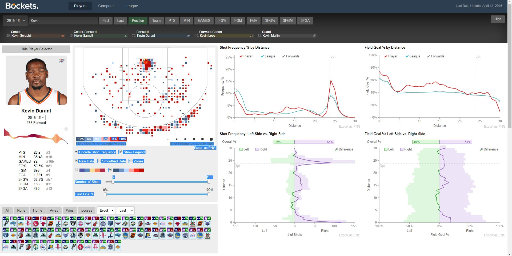
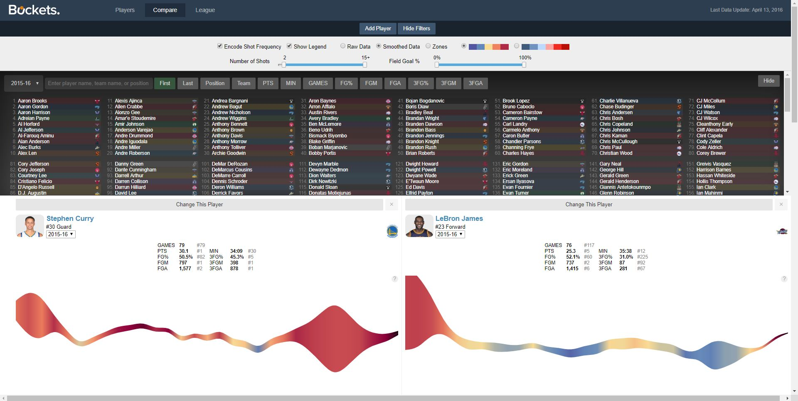
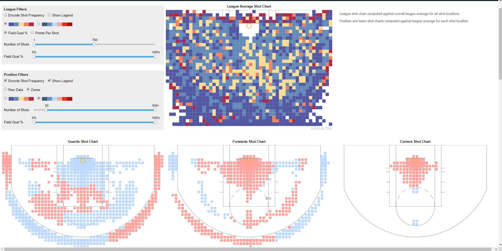

All in all, I am so glad to have found this visulization. My love for basketball has no bounds and this just really excites me to see someone else putting this level of effort to make something so beautiful in my eyes.

While it is not perfect it is pretty darn close. The level of detail and the amount of effort shown in this is beyond belief impressive. I think it'd be cool if the original owner would continue his work because I can definitely see the benefits to this when it comes to ESPN or FS1 analytics and who knows maybe teams would use it for team preparations.
A cool thing too would be if it was expanded beyond just basketball. Like if this was able to be applied to football or baseball it would an interesting thought.

